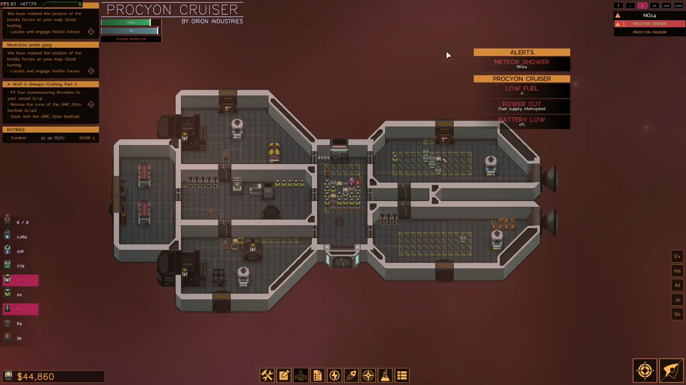

MH 0 | No headliner today nothing new in the west
The last two weeks I really haven't been doing much this is a more of a mental health post for all the readers who don't know I irregulary update everyone on what state I am in here. Because otherwise I might not talk about it or just with my close relatives. And journaling and writing down these thoughts helps to ground me center myself and clear my head again. While I am not a computer. And will not associate with one that be really strange this is my way of a soft reset.
I did however go to a bunch of interviews, trial working days. The past 2 weeks. I experienced the following phenomenon again. Education is key to opening doors. So is applying to jobs with entry level experience. If you are not aware or maybe you are not in the legal age to go to work yet. So I got a bit fatigued with the jobs I been offered and that well I applied for and the stupidity beyond being hired in these said jobs. As you're going there to earn money they did by all means try one thing and lulabye you into giving them money for work clothes or nessecary job relevant trainings looking at you McDonalds 50€ for a mandatory hygiene training? That cant be taken care of you're kidding right. We give everyone an equal chance. A equal chance to get ripped off of course. I ain't stupid. We're not doing this. If you want me offer me money and a proper training like you advertised
Equally stupid but even more irratating and frustating was a job I applied for as a delivery driver for a company called eismann they do offer you the service to deliver you guessed it ice cream and other frosted goods, stuff you usually get from a grocery store. While stating they aim today at all audiences and ages I doubt I will actually find you customers but that's up to you champ! And how we train you in being a good salesman and sport. Honestly I do like the company and don't nessearily wanna bad mouth them at all the interview went fine and the guy seemed intrigued on hiring me.
Only to irritate me by saying we had a young blood how is the stereotypical german dude tall, blonde, blue eyes, young, handsome looking type. Who did his job just fine of course great that you tell me that and tell me it's mainly only looks that matter on the job. Which already sorta makes me mad to the fact that you inherited with this statement that even if not intentiontal that I was not that type of guy. Yeah thanks for mentioning it again If i was I had less troubles in life I know.
But what really blew me out of my shoes was the fact that I had to get independent just to get hired excuse me? Great for mentioning that in the end just like that as I went out the door in my head my gears clicked and it snapped into place wait. They only don't wanna pay taxes. If you get independent in germany you'll have to file a yearly tax report and depneding on where you're located they are rather strict if you mess up you go to jail just like the IRS in the US right well we germans dont have to worry as individuals nessecarily if we don't have our own business we dont have to file in a tax report while it's beneficial to do so especially if you have a lot of outgoing expenses it also imposes risks and takes prepration and time just like this blog post. Let's be real who has time for taxes nobody and nobody likes the chore to do them so why not just have a general tax and be done with it. That's what the people in germany thought great idea. Not so great when companys try to avoid costs and labour by making their staff indenpendent though. And wanting them to pay for their expenses on their own smart move but shady. I'm sure now that I am writing about that, that a bunch of other companys that similar to them have sale reps, field staff will require that from their staff too.
To me this seems outlandish, but maybe ok. I even said fine to myself in my brain if I get the money paid that I want to. Not having accepted the job fully only to bill me already prior to working there 440€ for work clothing. Excuse me? I worked in a family biz. Guess what we sell. He just billed me an absurd amount of money for what. Most companys take care of that for their staff if they really want them. Why do they think now they can just quote me that and be like fine right? Oh yeah... entry level positions with no requirements problem with those jobs is you can't really expect much right. I thought we had labor laws and rights as working staff. Well to some employeers maybe not.
So you might say as reader sigh it's a rough world buhu. What's the big deal? This is important. Most people start out in such jobs and being treated unfairly like this is the sure road down to being the abused workforce in any workplace.
Germany expect you to at least have done an apprenticeship you cant get higher level paying jobs if you don't got the apprentencieship. Well ok start an apprenticeship sorry you missed the entry date we can't register you this shortly for 01.08. huh? Gotta wait til' 2026 dafuq dude. It's not like being an apprentice already means being buckled for your money again as they're not required to pay you fully but only a limited amount of money for apprentice in the year. And btw it's not even guarenteed if they don't like you that you'll get the position you're learning, working for multiple years with shorter pay then most other staff that already has experience within the field or just finished their apprenticeship. Earning almost twice, thrice the money then you. And that most people doing an apprenticeship again have already moved out their own parents home and don't have the comfort of traveling with a free car or something and gotta pay insurances, groceries, rent. Welcome to the rough adult life. Where you'll get beaten an batted for wanting to be something greater then you are and achiving a higher level of education. Who created this mess? You want support from the goverment sorry, this is not your first apprenticeship you're supposed to have earned enough keep to support yourself at this point. We don't support this. Request denied. What a load of horse shit.
So.. that's where I am at. I wanna grow but first gotta stick back to my roots and branches in hopes of finding a higher level. That's dumb. Mainly because well I spent to much time doing other stuff like finding a new appartment because I get kicked out my current one for having stress with my current landlord for having had pets in my appartments excuse me I have rights as a tenant too. Whatever. Fighting for your rights costs money and not to short of much of it. And it's not guarrented that you'll win and have long process time. Ok. Let's just move then. Better luck next time.
That's sorta been my mantra for a long time. Better luck next time. Like rolling a dice again and again one time soon enough the dice might roll again in my favor. I really start regretting to quit my job at my current employer being my own family company lead by my brother and father.
I did get to notice how hard work also can get and be like which is nice to know. Because well now I know how hard work can really be now. And people can stop dissing and annoying me with their hard work now. Shut up I know. At the same time you get to notice how little you did the past years and this frustrates me as I am regretting my decisions to stay for so long and procrastinate. And they sorta also had a right to do tell me this in my face so. Which makes me furious from their POV it might have been justified but to me it feels just so disregarding to me as a person and my emotions. But what to do besides put it aside and shrugging it off like it did not belong to me in the first place. But that's a reality I have to face. Probably due to being as privliged spoiled last child in a line of rich people. And to a certain extend a reality I haven't had to face for a long time now.
So here we are:
You need experience and most importantly in germany a apprenticeship from what I gathered mostly after school. At least with my mediocore grades that werent bad but neither good enough to continue studying at all.
So I went down the road and after well going to vocational training school I went into one after secondary school or for me it was the Realschule that focused on economics and had the main subject of IT. Guess that's one of the main reasons I write here today instead of a fb page again.
I did not go wrong on all roads I went down upon. Otherwise I had not gathered the knowledge to write, create a blog like this. But this still feels like a hastly thrown together linkedin post sorta is. Yet it's liberating to know you haven't had to login here or share any personal information to receive this information.
What else happend besides job stuff. Well I started moving to my new appartment on the 27th july with my gf. Who luckily boxed up all the stuff in our basement compartment and I managed to lend out the new gen vw crafter we had and move most of the stuff in one drive with her help. Besides maybe a TV sideboard I got from my parents. That was nice to do and really beneficial without extra cost from the help of my fam biz. I should thank them for the oppurtunity here. Thanks Fabian, thanks dad :) otherwise I would had a lot of pain having to pay 100€ or more just to rent one for a single ocassion and drive. What a rip off deal. With that coming extra charges for any extra km driven and having to pay for fuel etc. having to go throught paper work etc. what a bunch of unnessecary bs.
I am still looking for a new kitchen. Before I move over and I am desperatly waiting for power to be connected at the new place as well as internet, gas which appointment dates are really far ahead in the future... uff.
Besides that I've been playing video games like Kane & Lynch: Dead Men getting far into the game about 81% done before giving up on a stealth section. I dispise stealth. Sorry... Metal Gear ain't my gear yet.
The game itself is mediocore lots of swearing and basic gameplay just rng arcade shooting. Kill all enemies move on the gameplay does not evolve further from this besides maybe a railsection and or usage of a special item like a rocket launcher.
Viscera Cleanup Detail: Shadow Warrior played it cleaned, my own home is messy now. Missing just one 50K stack to 100% the game. Probably burnt it... fuck.
Started Truberbrook nice little indie game apparently Jan Böhmermann seems to have a voice actor role in here. Don't know from whom yet. Great point and click adventure :)
Oh for some reason my brain got way to invested in getting knowledge on how The Ultimate Doom got created today. Maybe because I started getting into modding, playing Brutal Doom again. Great total conversion mod btw. Highly recommended by me.
Last but not least I started playing this night The Last Starship Demo this game is awesome and made by the same guys that made Prison Architect and you can definitly tell. I thought this might be a rouge-lite like FTL and really hard it has quite a steep learning curve but still catches me somehow and does not seem to awfully hard yet. As I write this I messed up and float arround in the void with no fuel...

License CC-BY-NC-SA
Oh yea and if you wanna check out a nice site on the web check https://www.usenetarchives.com/index.php here you can read old usenet archive :)
My girlfriend and I also memed arround a lot and played a nice meme webgame find it here
https://makeitmeme.com/ out came stuff like this
License CC-BY-NC-SA